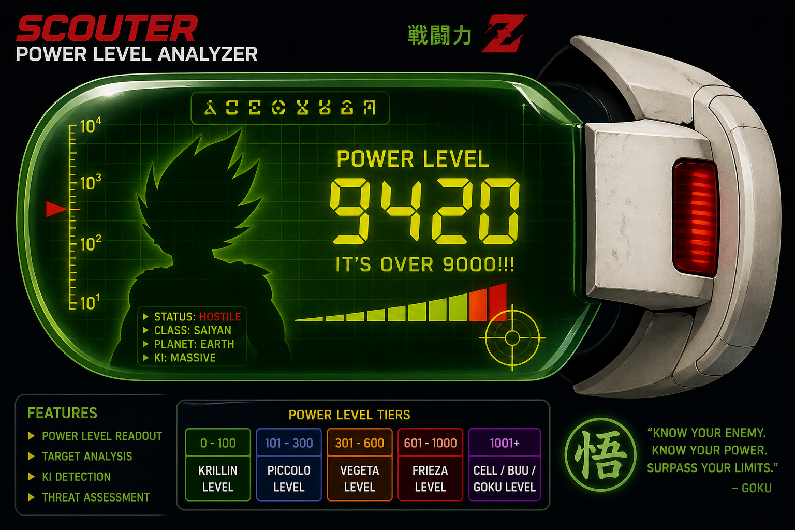

Scouter Power Level System
Overview

This project is a stylized “scouter” interface inspired by Dragon Ball Z, designed to estimate and compare character power levels in a fun, visual way.
Scouter readings aren't always exact—they fluctuate based on energy output, transformations, and battle conditions.
How It Works
Each character is assigned a power level based on key feats, transformations, and overall combat ability.
- Strength contributes to raw damage output
- Speed affects reaction and agility
- Endurance determines durability
- Energy represents special abilities
- Stamina affects sustained combat ability
Think of it like a scouter reading—quick, dramatic, and slightly biased depending on who's reading the data.
Design Approach
The layout is inspired by anime HUDs and scouter displays using bold typography and structured panels.
Even though it's themed like a system, it’s designed to stay readable and human-friendly.
Scan Power Level
Enter stats to simulate a scouter reading.